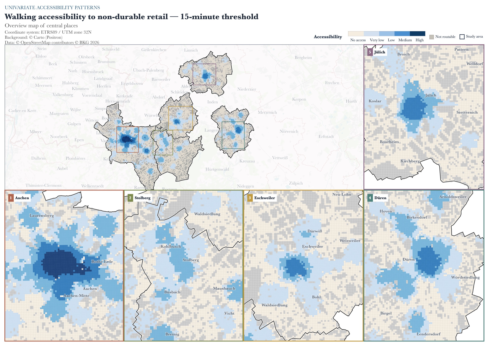
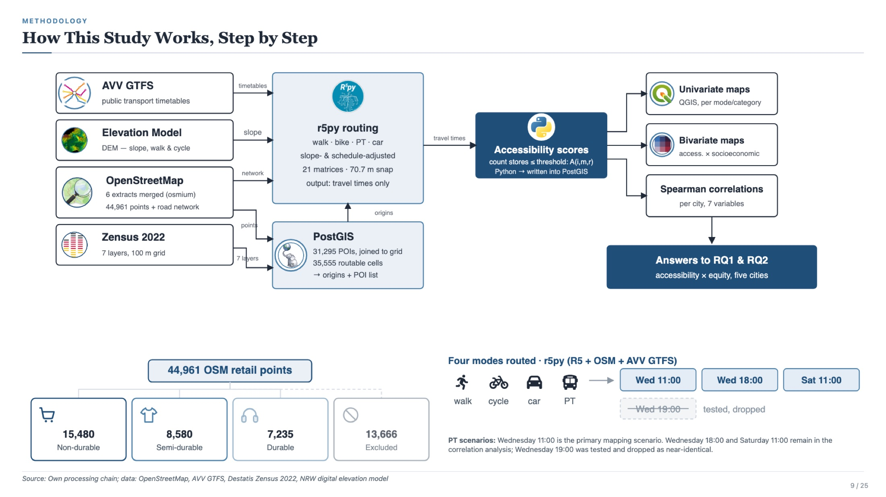
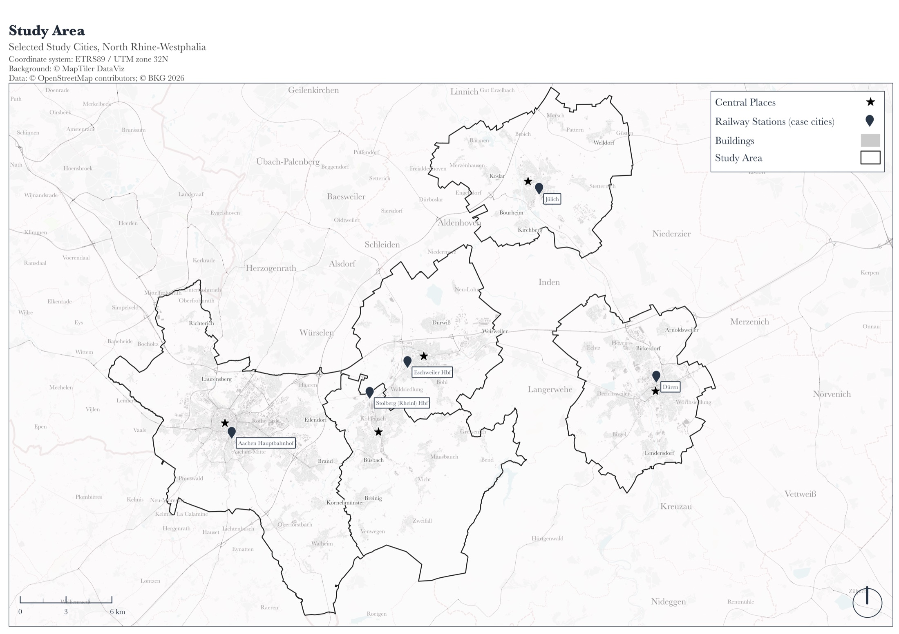
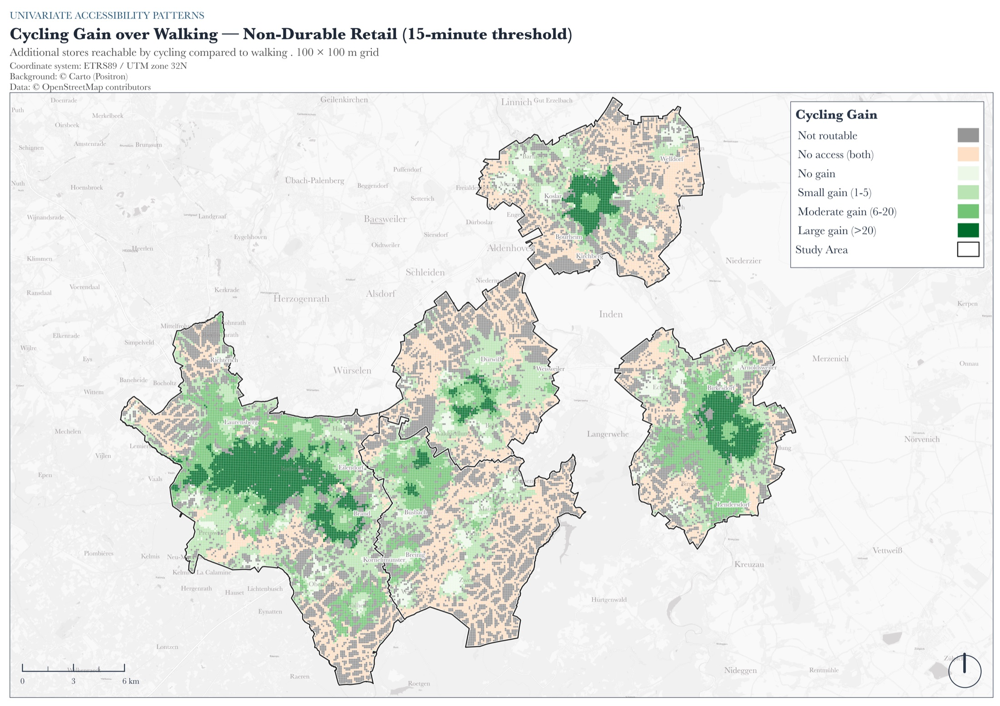
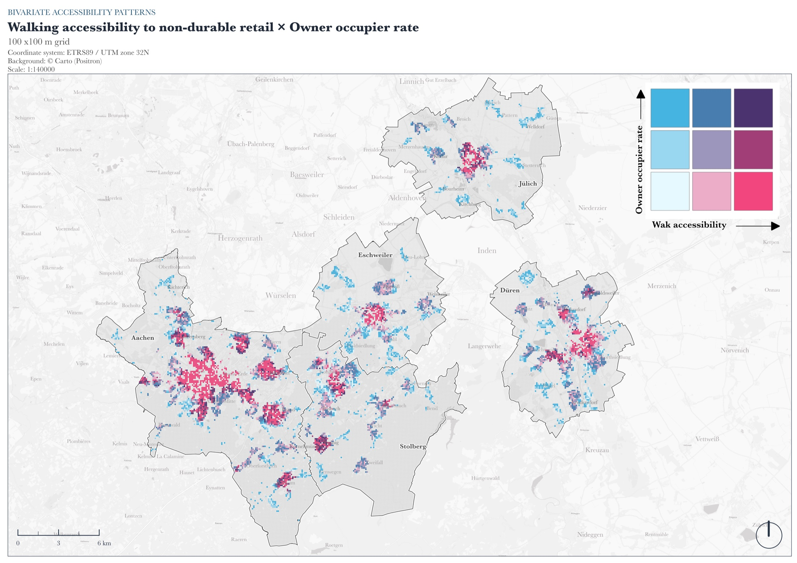

{kind=link}

Verkehrsmittelspezifische Einzelhandelserreichbarkeit
RWTH Aachen University · abgeschlossen im Juli 2026 · Note der Masterarbeit 1,3
Bewertung der Erreichbarkeit von Einzelhandelsgeschäften mit bestimmten Verkehrsmitteln in ausgewählten deutschen Städten
Untersucht wurde, wie viele Einzelhandelsstandorte zu Fuß, mit dem Fahrrad, dem ÖPNV und dem Pkw erreichbar sind und wie sich diese Muster mit der sozioökonomischen Struktur überschneiden.
Forschungsfrage
Wie verteilt sich die Einzelhandelserreichbarkeit über Stadtteile und sozioökonomische Gruppen, und zeigen sich systematische räumliche Ungleichheiten bei unterschiedlichen Verkehrsmitteln?
Analyseworkflow
Schritte aufklappen, um die Details zu lesen.
01Einzelhandelsstandorte
44.961 Einzelhandels-Punkte aus OpenStreetMap wurden in kurzfristigen, mittelfristigen und langfristigen Bedarf eingeordnet: 15.480, 8.580 bzw. 7.235 Standorte.
02Analyseraster
Kumulative Erreichbarkeit auf dem 100-m-Zensus-2022-Raster. Das Untersuchungsgebiet umfasst 51.062 Zellen, davon wurden 35.555 routbare Zellen einheitlich für den Modusvergleich verwendet.
03Reisezeit-Routing
Berechnung der Reisezeitmatrizen mit r5py und der R5-Routing-Engine. Für den ÖPNV wurde der AVV-GTFS-Feed mit dem OSM-Netz kombiniert.
04Statistik & Karten
Verarbeitung in PostgreSQL/PostGIS und Python. Spearman-Korrelationen und bivariate Choroplethen in QGIS zeigen die sozioökonomischen räumlichen Muster.
{kind=link}

Ergebnisse
Fußläufige Erreichbarkeit konzentriert sich auf Zentren
Je nach Stadt haben 46 bis 75 % der routbaren Zellen innerhalb von 15 Minuten keinen erreichbaren Standort des kurzfristigen Bedarfs. Bei Bevölkerungsgewichtung wird die Lücke kleiner, bleibt aber sichtbar: 6,6 % der Aachener Bevölkerung und rund 30 % in den stärker dispers verteilten kleineren Städten liegen außerhalb dieses modellierten Einzugsbereichs.
Radverkehr erweitert den Einzugsbereich
Mit dem Fahrrad steigt der Anteil der Bevölkerung mit Zugang zu mindestens einem Standort um 5,2 bis 18,6 Prozentpunkte. Die größten Gewinne zeigen sich in den kleineren und stärker dispers besiedelten Städten.
Pkw-Erreichbarkeit kann räumliche Unterschiede verdecken
Unter dem modellierten 15-Minuten-Schwellenwert ist kurzfristiger Einzelhandel mit dem Pkw von 98 bis 100 % der routbaren Zellen erreichbar. Das ist keine Aussage über gleichberechtigten Zugang, weil Fahrzeugverfügbarkeit und individuelle Mobilität nicht modelliert werden.
Sozioökonomische Zusammenhänge hängen vom Modus ab
Die Eigentümerquote ist in jeder Stadt, Kategorie und jedem Modus negativ mit der Erreichbarkeit verbunden. Für den Pkw ist der Zusammenhang im Allgemeinen schwächer als für die nicht motorisierten Modi. Es handelt sich um räumliche Zusammenhänge auf Zellenebene, nicht um individuelle oder kausale Effekte.
Ausgewählte Karten
{kind=link}

Fünf Fallstädte in der Region Aachen.
{kind=link}

Die größten Gewinne liegen in den Übergangsräumen am Stadtrand.
{kind=link}

Hohe Fußwegerreichbarkeit überschneidet sich in dichten Zentren mit niedrigeren Eigentümerquoten.
Technischer Stack
Kundenkarten aus Plan4Better-Projekten sind hier nicht enthalten. Die gezeigten Karten wurden für diese akademische Arbeit erstellt.